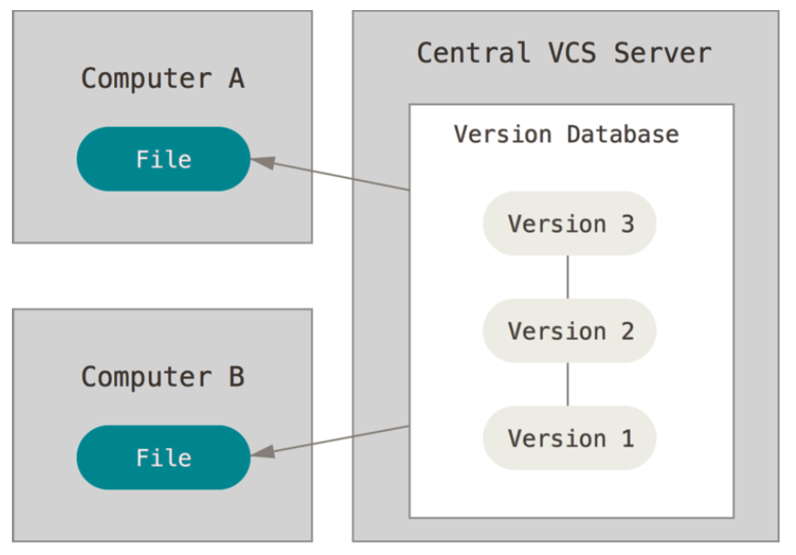
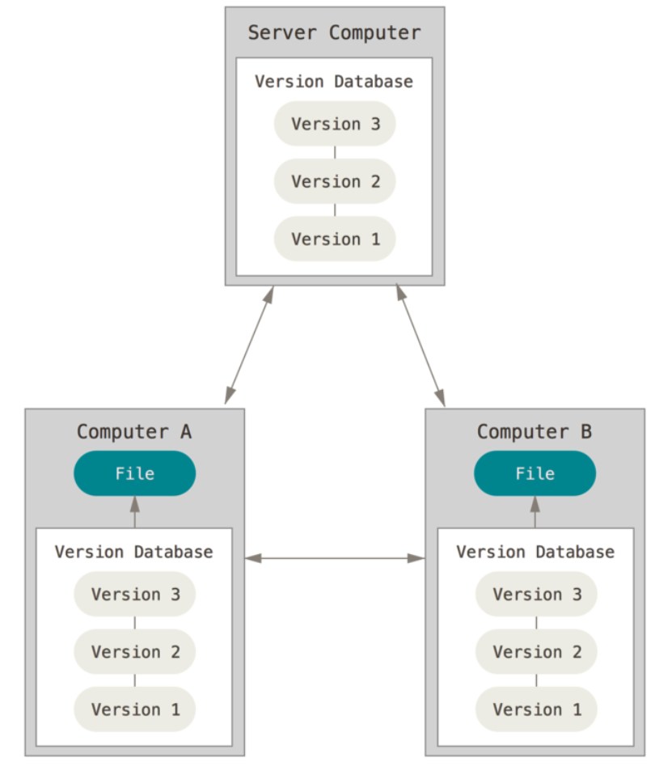
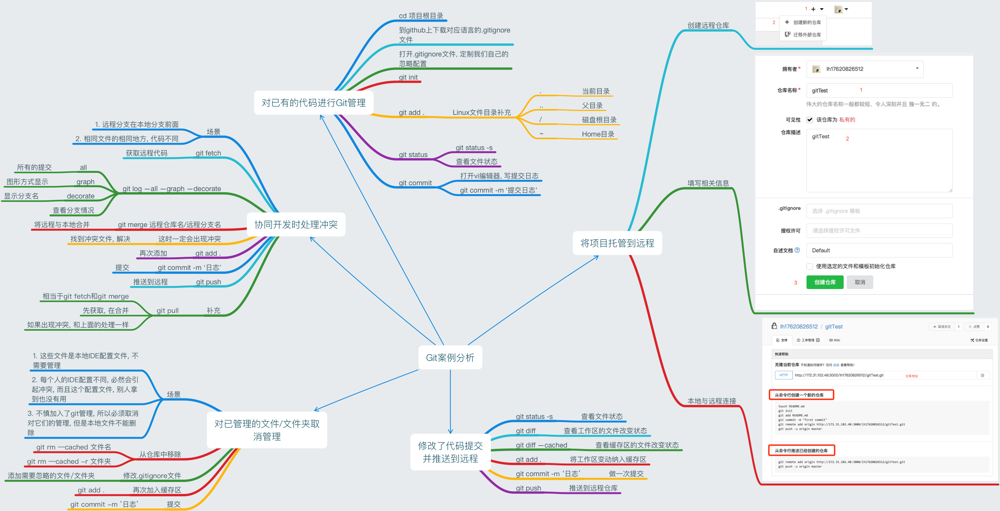
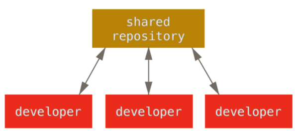
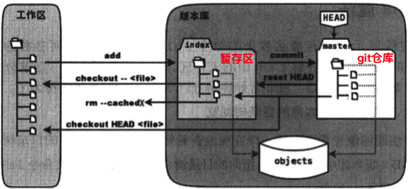
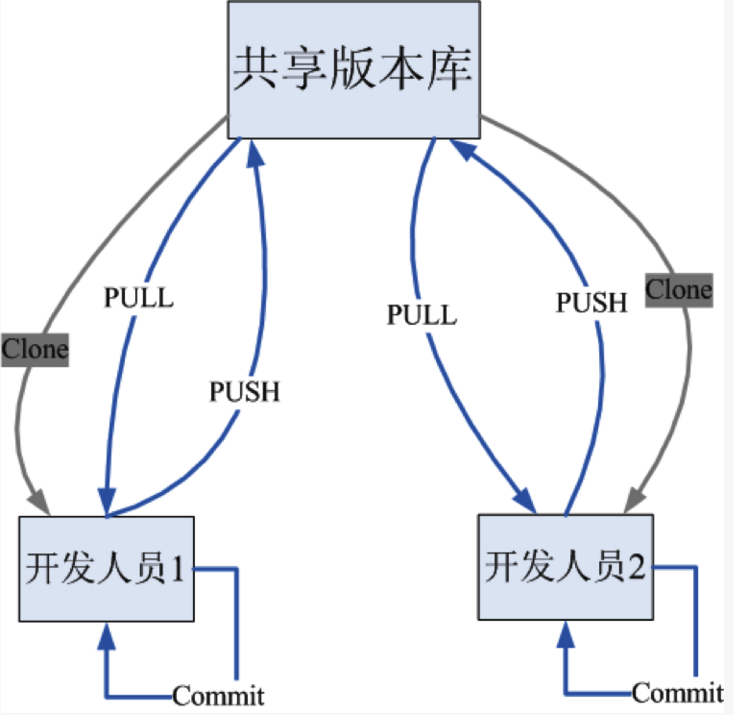
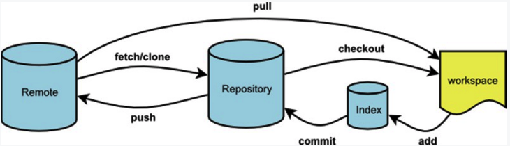

git 快速入门
Mon 07 May 2018 by Little CaptainGit vs SVN
系统的架构
SVN : 集中式

Git : 分布式

分布式架构的好处, 近乎所有的操作都是本地操作. 具体体现在: 1. 离线可以工作; 2. 操作速度快
对待数据的方式
SVN : 差异比较

Git : 文件快照

Git 中文件的三种状态
- 已提交(committed) : 数据已安全的保存在本地数据库中
- 已修改(modified) : 修改了文件, 还没保存在数据库中
- 已暂存(staged) : 对一个已修改的文件的当前版本做了标记, 使之包含在下次提交的快照中

Git 的基本环境搭建
安装 Git for Windows
使用管理员权限运行, 选择安装目录后, 一直下一步即可!!!
安装成功后, 以后每次都使用 Git Bash 这个程序即可. 打开后界面如下:

Git 的用户信息配置
- 这个用户信息是用于指示提交是谁做的, 必须配置
git config --global user.name 'Little-Captain'
git config --global user.email 'littlecaptain@foxmail.com'
Git 核心命令
- Git 帮助命令
git <verb> --help
git help <verb>
man git-<verb>
- Git 初始化命令
git init

案例分析

git 使用经验集锦
Mon 31 July 2017
by Little Captain
修改 Git 的默认编辑器
# 1. subl 是可以在终端中直接启动的一个文本编辑器
# 2. -w 的意思是: 让 git 等待文本编辑结束. 当用户编辑完成后, 关闭文本就表示结束
git config --global core.editor "subl -w"
git 基本操作
Mon 08 May 2017
by Little Captain
常用单命令操作
git init: 初始化本地仓库git status: 查看文件状态git add .: 添加文件到暂缓区git commit -m "注释": 从暂缓区提交文件到本地代码仓库-
git tag -a '标签' -m "注释": 打标签 -
git tag: 查看标签 git tag -d '标签名称': 删除标签git remote add origin 远程仓库地址: 给本地仓库添加远程仓库关联地址git push origin master: 上传本地代码到远程仓库git push --tags: 上传标签到远程仓库git push origin :标签: 从远程仓库删除标签 …
搭建 git 服务器
Sun 07 May 2017
by Little Captain
准备篇
服务器
- 创建git专用账户git
sudo adduser --system --shell /bin/bash --user-group git # CentOS
sudo adduser git ssh
sudo passwd git
- 修改git账户的home目录(有需求才改)
# 当然可以直接修改/etc/passwd文件
usermod -d /tmp git
- 安装相关软件(在任何账户都可)
sudo apt-get update
sudo apt-get install git-core openssh-server openssh-client
sudo apt-get install python-setuptools
-
进入
git账户, 安装gitosis -
1.获取
git clone …分布式 git - 工作流程
Sun 07 May 2017
by Little Captain
集中式工作流
-
集中式系统中通常使用的是单点协作模型 - 集中式工作流。 一个中心集线器，或者说仓库，可以接受代码，所有人将自己的工作与之同步。 若干个开发者则作为节点 - 也就是中心仓库的消费者 - 并且与其进行同步。
-
如果两个开发者从中心仓库克隆代码下来，同时作了一些修改，那么只有第一个开发者可以顺利地把数据推送回共享服务器。 第二个开发者在推送修改之前，必须先将第一个人的工作合并进来，这样才不会覆盖第一个人的修改。 这和 Subversion (或任何 CVCS)中的概念一样，而且这个模式也可以很好地运用到 Git 中。

集成管理者工作流
- 每个开发者拥有自己仓库的写权限和其他所有人仓库的读权限。 这种情形下通常会有个代表“官方”项目的权威的仓库。 要为这个项目做贡献，你需要从该项目克隆出一个自己的公开仓库，然后将自己的修改推送上去。 接着你可以请求官方仓库的维护者拉取更新合并到主项目。 维护者可以将你的仓库作为远程仓库添加进来，在本地测试你的变更，将其合并入他们的分支并推送回官方仓库。 整个流程看起来是这样的:
- 项目维护者推送到主仓库。
- 贡献者克隆此仓库，做出修改。
- 贡献者将数据推送到自己的公开仓库。
- 贡献者给维护者发送邮件，请求拉取自己的更新。
- 维护者在自己本地的仓库中，将贡献者的仓库加为远程仓库并合并修改。
- 维护者将合并后的修改推送到主仓库。
read more这是 GitHub 和 GitLab …
git 常用命令
Sun 07 May 2017
by Little Captain
git核心命令工作示意图



- git帮助
git help <verb>
git <verb> --help
man git-<verb>
git help
git help 其他指令
- 初始化一个本地仓库，生成一个.git目录，用于维护版本信息
# 初始化可以在一个空文件执行, 也可以在一个非空文件执行
git init
git init 仓库路径
# 初始化共享仓库, 共享仓库不能直接操作, 必须clone到本地
git init --bare
# Git 会自动修改该仓库目录的组权限为可写
git init --bare --shared
- 克隆远程仓库到本地
# 下载远程仓库到当前路径
git clone 仓库的URL
# 下载远程仓库到特定路径
git clone 仓库的URL 存放仓库的路径
# 克隆时 …